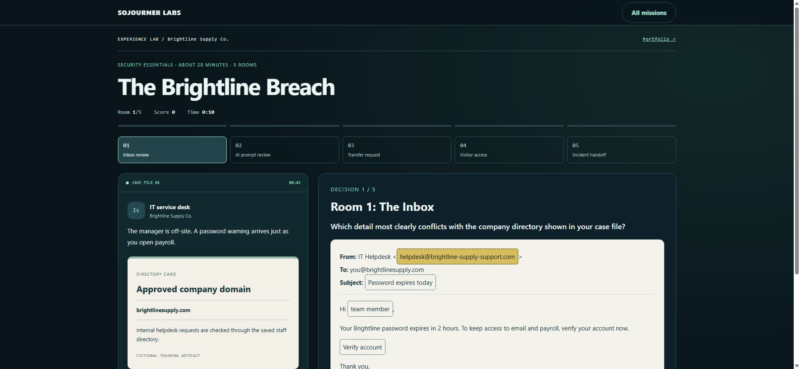
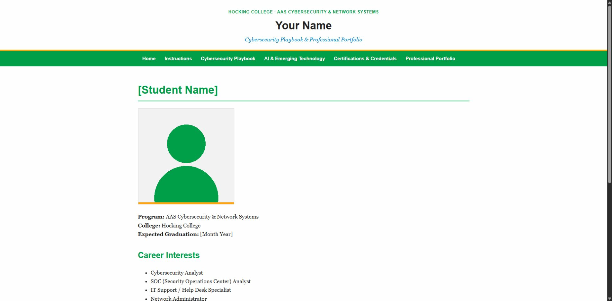
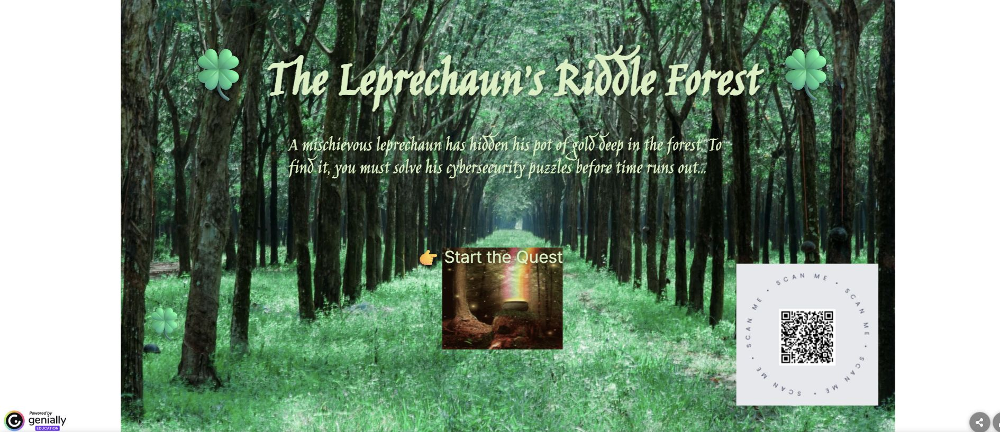

Sojourner Labs

Workplace missions about cybersecurity and responsible AI use. Five playable missions connect workplace decisions with scoring, explanations, and completion certificates. Choose a scenario below.
Play Brightline Breach ↗I design immersive, gamified experiences to better prepare people for the workforce, drawing on real-world experience and current AI and cybersecurity use cases. Explore playable games and college operations tools, with my contribution, implementation, and current stage made clear.
The Longest Saturday
Read the design, evidence, and proposed evaluation → ▶ Enter the adventure Opens the live game ↗
▶ Enter the adventure Opens the live game ↗
Follow a choose-your-own-adventure story through Hocking County. About 12 big decisions and a surprise challenge build an exploratory interest profile linked to Hocking College programs.
Designed for high school students, the experience brings the Holland career interest model (RIASEC) into a playful setting for exploring what could come next.
Respond to situations throughout the story.
See your career interest code take shape.
Find matching programs and use your results to start a conversation.
Career Navigator demonstrates my approach to immersive experience design: place learners in a scenario, invite meaningful choices, and provide feedback for reflection. The case study connects career exploration with my broader focus on designing experiences for workforce readiness.
Explore the case study →Launch the live game below, or open it in a new tab for more room. Sound and music controls are inside the game.
Explore the flagship case study →Career Navigator invites high school students to make choices, notice interests, and explore Hocking College programs. It connects a playful experience with a conversation about what could come next.
 Choose a cybersecurity game →
Choose a cybersecurity game →Stories, clues, and puzzles give visitors a way to engage with cybersecurity ideas. Try Cyber Horror Escape Room or The Leprechaun’s Lost Cipher, then examine the concepts each experience invites learners to explore.
Choose your game ↓I design immersive, gamified experiences to better prepare people for the workforce, drawing on real-world experience and current AI and cybersecurity use cases.
Real challenges inform scenarios. Learner decisions create opportunities for practice. Reflection connects the experience to a next step.
Explore AI program proposals, portfolio-based learning and Sage, and a municipal cybersecurity support model. Each entry identifies its current stage.
Inspect the design work ↓I build experiences that turn decisions into practice: explore a career, protect workplace information, investigate an incident, or document the evidence behind a technical skill.

Workplace missions about cybersecurity and responsible AI use. Five playable missions connect workplace decisions with scoring, explanations, and completion certificates. Choose a scenario below.
Play Brightline Breach ↗
Inspect exposed secrets, decode a cipher, question a leaky chatbot, recognize phishing, and solve the final riddle. Hints, pause, optional sound, and a final debrief support exploration without a countdown.
Play Emerald Enigma ↗
Take the analyst’s seat in a five-stage cybersecurity escape game. Review evidence, test decisions, use hints, and unlock a recovery plan. Choose untimed practice or a 10-minute challenge; finish with a workplace-focused debrief.
Play Operation Blackout ↗
I created this student template for Hocking College to turn labs into employer-readable evidence: knowledge areas, artifact documentation, reflection, responsible AI, credentials, and a professional portfolio.
Explore the student portfolio demo →Five browser-based missions. No account required: use an optional nickname, explore the evidence, and review the explanation behind each choice.
Previews show real gameplay screens. Select a preview to inspect it, or choose Play to enter the mission.
The inbox is your first clue.
Inspect a suspicious email, protect AI prompts, share securely, verify visitors, and report an incident.
Email triage · AI privacy · Reporting
Play The Brightline Breach ↗It sounds like the CEO. Is it?
Question a convincing request. Verify identity and follow payment approvals through a simulated impersonation attempt.
Impersonation · Verification · Approvals
Play Voice of the CEO ↗Useful assistant. Risky information.
Protect sensitive data, question an AI-generated citation, review tools, and choose a responsible-use rule.
Data privacy · Fact-checking · AI policy
Play The AI Policy ↗One prompt. A critical decision.
Compare passphrases, deny an unexpected MFA prompt, respond to prompt bombing, and request appropriate access.
Passphrases · MFA · Access control
Play Locked Out ↗The files are locked. What comes next?
Respond to a simulated ransomware incident: isolate safely, recognize payment pressure, escalate, and inspect readiness evidence.
Ransomware · Escalation · Readiness
Play The First Hour ↗Each mission can be completed in the browser. Certificates record activity completion; they are not professional certifications or proof of workplace readiness.
These published games introduce cybersecurity concepts through stories, puzzles, and decisions. Explore, decode, and practice recognizing safer choices.
▶ Play escape room ↗Enter a haunted house, collect missing objects, and solve cybersecurity challenges to help a trapped ghost recover its memories.
▶ Play the escape room ↗
▶ Start the quest ↗Follow the clues through a riddle forest. Decode hidden messages, question weak secrets, and choose a safer path toward the treasure.
▶ Play the cipher quest ↗Previews show the actual game opening screens. Both cybersecurity games open on Genially in a new tab.
Courses, tasks, scheduling, faculty workload, advising, assessment, credentials, evidence, and reporting in one academic operations application.
Review the project and live demo →React prototypes for program and course information, learning outcomes, industry-credential alignment, and intended accreditation workflows.
Review the prototype and scope →I apply industry-standard AI and cybersecurity frameworks to the immersive, gamified experiences I design, so scenarios, decisions, and feedback connect with the practices people encounter in the workforce.
NIST NICE, CSF, RMF, SP 800-53, SP 800-171, AI RMF, and the Generative AI Profile (NIST AI 600-1).
NICE provides a workforce lens through tasks, knowledge, and skills. AI and cybersecurity risk frameworks and guidance help connect experiences with professional decisions, responsibilities, and safeguards.
Explore my framework-informed approach →Developed AI certificate and associate-degree proposals, syllabi, and instructional mapping alongside cybersecurity curriculum modernization. Program development is distinguished from the status of a future launch.
Developed a learning model using GitHub and Google Sites portfolios, hands-on assessments, and Sage, an AI instructional assistant integrated into coursework.
Designed a faculty-supervised model connecting student practicum and capstone work with municipal cybersecurity needs, including risk assessments, policy templates, and NIST CSF mapping.
Program design and pilot planning; this entry does not claim completed services for a specific number of communities.
My design and research focus on immersive, gamified experiences for AI and cybersecurity workforce readiness. Published games and curriculum work provide concrete foundations; AI-supported feedback is a related area of inquiry.